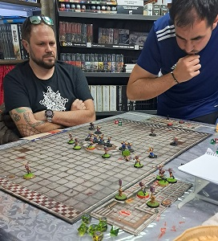
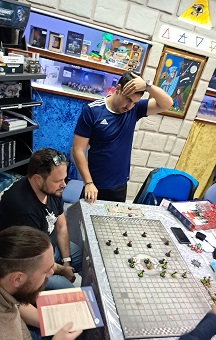
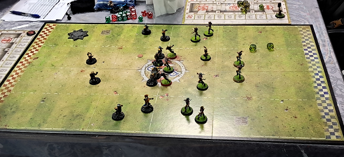

18/10/24
-¡TOUCHDOWN! ¿Has visto eso, Jim? En el último segundo del partido los enanos de Raúl marcan el segundo tanto.
-Gran jugada, Bob. Aunque no se puede decir que haya tenido que esforzarse demasiado en esa última carrera.
-JA, JA, JA. Desde luego, Jim. Solo quedaba un elfo en pie. Un tipo testarudo, ¡parecía más enano que elfo!.
-Si te parecía muy bajito, quizá fuera porque no se levantaba del suelo, Bob.
-En cualquier caso, no me importaría tenerlo en mi equipo.
-Bueno, Bob. Si alguien entiende de tipos duros, ese eres tú. Pero me consta que también entiendes de viandas, ¿no es así?
-¡Ah! Ya sé por qué lo dices, Jim. La empanada de Halfling que ha traído Miki estaba deliciosa. Aunque eso le sirviera para inclinar la balanza a su favor.

-Volviendo a lo deportivo, este encuentro se salda con nada más y nada menos que dos elfos muertos, dos más lesionados y la extraordinaria cifra de 6 KOs en el banquillo de los Villabroncos.
-¡Oh, Jim! Duro varapalo para este equipo en su primer partido.

-Sí, Bob. El resultado de 2 - 0 junto con los 3 lesionados le otorga al equipo de enanos de Raúl unos espléndidos 5 puntos. Encabeza la clasificación y empieza a tomar ventaja sobre el resto de equipos.
-Eso es, Jim. Pero solo es el primer encuentro de lo que espero que sea ¡el campeonato más sangriento de mi carrera como comentarista!


11/10/24
-¡Qué sangriento expectáculo, Bob! Llegamos al descanso con el marcador 1 - 0 a favor del equipo de enanos de Raúl.
-Muy sangriento, Jim. Pude ver como te relamias los colmillos
-No sé a que te refieres, Bob. Pero creo que no quedaban camillas libres en la enfermería de los Villabroncos
-Eso es, Jim. Alguno de esos elfos tardará en recuperarse.
-Un partido de enanos de manual.
-Bueno, Jim, yo no he leído un manual en mi vida pero lo que sí sé es que aún queda toda la segunda parte.
-Cierto, cierto. Es el turno de golpear para los Villabroncos.
-!Estoy deseando que se reanude esta masacre!
-!Pues estás de suerte, Bob! porque el partido se reanudará este próximo viernes, día 18 en el mismo lugar.
-Excelente noticia, Jim.


07/10/24
-¡Buenas noches, Bob!
-Eh... Jim
-El próximo día 11 dará comienzo la primera edición de la Liga de Blood Bowl Rayo de Luna.
-¡Lo sé, Jim! El evento tendrá lugar a las 18:00 en la tienda Rayo de Luna.
-La ancestral enemistad entre Enanos y Elfos vuelve a los terrenos de juego. ¿Verdad, Bob?
-¡Sí! De la mano del equipo élfico Villabroncos de Soria, dirigidos por el mítico entrenador Miki
-¡Exacto, Bob! Pero esos flojuchos elfos se enfrentarán a un equipo de robustos enanos moldeados por las manos de hierro del entrenador Raúl.
-Esperemos que la sangre fluya, Jim. Si habrá más eventos ligados a este, se comunicará con la mayor antelación.